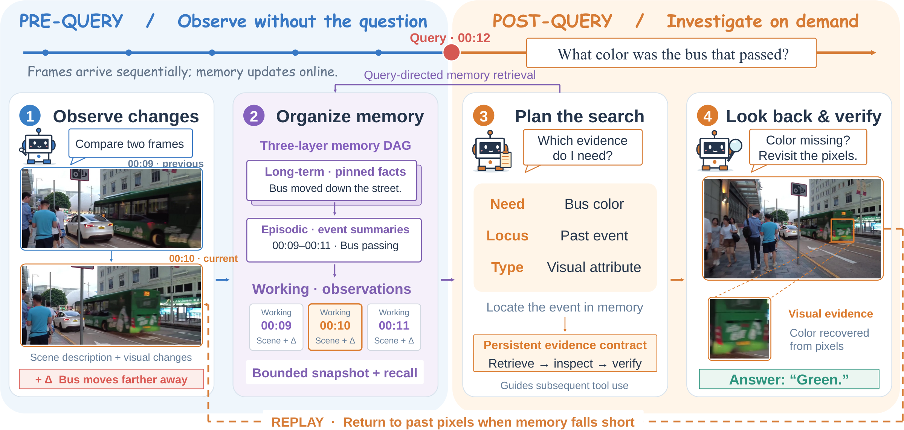
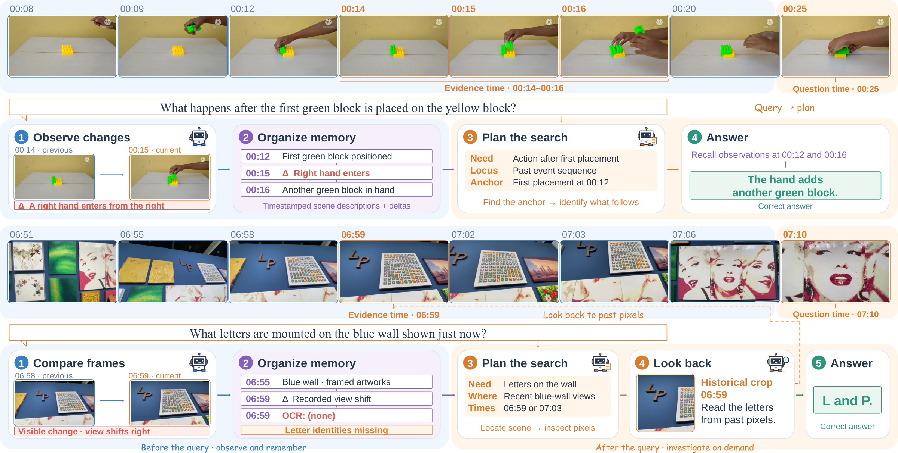

Towards Human-Like Agentic
Streaming Video Understanding
See it in action
From observation to an informed answer
Watch visual changes, structured memory, and query-driven reasoning unfold across three video examples.
Download videoMusic: “Meanwhile” by Scott Buckley · CC BY 4.0
Quantitative results
OVO-Bench performance
Evaluation across real-time visual perception, backward tracing, and forward active responding.
| Model | Real-Time Avg. | Backward Avg. | RT+BT Avg. | Forward Avg. | Overall |
|---|---|---|---|---|---|
| Human | |||||
| Human Agents | 93.20 | 92.33 | 92.77 | 92.90 | 92.81 |
| Proprietary MLLMs | |||||
| Gemini 1.5 Pro | 69.32 | 62.54 | 65.93 | 57.15 | 63.00 |
| Gemini 3 Flash | 72.44 | 62.47 | 67.46 | 57.15 | 64.02 |
| GPT-4o | 64.46 | 60.75 | 62.61 | 53.40 | 59.54 |
| Open-Source Offline MLLMs | |||||
| Qwen2-VL-72B | 61.92 | 56.95 | 59.44 | 49.30 | 56.27 |
| LLaVA-Video-7B | 63.52 | 40.40 | 51.96 | 54.82 | 52.91 |
| LLaVA-OneVision-7B | 64.02 | 43.71 | 53.87 | 50.50 | 52.74 |
| Qwen2-VL-7B | 55.98 | 46.46 | 51.22 | 48.74 | 50.39 |
| InternVL-V2-8B | 60.39 | 43.44 | 51.92 | 46.60 | 50.15 |
| LongVU-7B | 57.61 | 35.01 | 46.31 | 47.50 | 46.71 |
| Qwen3-VL-8B | 65.52 | 46.18 | 55.85 | 55.73 | 55.81 |
| Limited Open-Source Online MLLMs | |||||
| Stream-IT | 71.30 | — | — | — | — |
| HERMES | 69.00 | 49.40 | 59.20 | — | — |
| VideoLLM-online-8B | 20.79 | 17.73 | 19.26 | — | — |
| OASIS | 78.14 | 57.21 | 67.68 | — | — |
| SimpleBaseline | 79.90 | 54.90 | 67.40 | — | — |
| LatentStream | 68.50 | 60.00 | 64.20 | — | — |
| JoyAI-VL-Interaction | 68.40 | 48.60 | 58.50 | — | — |
| Mage-VL | 79.84 | 48.15 | 64.00 | — | — |
| FOLIO | 82.00 | 69.10 | 75.55 | — | — |
| Full Open-Source Online MLLMs & Video Agents | |||||
| Flash-VStream-7B | 28.37 | 27.38 | 27.88 | 45.09 | 33.61 |
| Dispider | 54.55 | 36.06 | 45.31 | 34.72 | 41.78 |
| ReKV | 62.50 | 45.30 | 53.90 | 48.00 | 52.00 |
| StreamForest-7B | 61.20 | 52.02 | 56.61 | 53.49 | 55.57 |
| Streamo | 67.40 | 49.20 | 58.30 | 57.00 | 57.90 |
| VST | 67.20 | 56.70 | 61.95 | 54.00 | 59.30 |
| ViSpeak | 66.28 | 57.52 | 61.90 | 54.25 | 61.08 |
| StreamAgent | 61.30 | 41.70 | 51.50 | 45.40 | 49.40 |
| EventMemAgent | 68.29 | 58.03 | 63.16 | 55.92 | 60.75 |
| DeltaStreamer | 72.23 | 67.72 | 69.98 | 58.25 | 66.07 |
RT+BT averages the Real-Time and Backward groups. — denotes an unreported result.
The idea
Video keeps changing. Memory should keep up.
In streaming video, questions can arrive after the relevant moment has passed. A retained description may miss the detail needed to answer. DeltaStreamer records visual changes alongside scene descriptions, organizes them into structured textual memory, and uses a query-driven planner to gather the evidence an answer needs.
- 01
Observe changes
Compare consecutive frames and record explicit visual deltas, preserving transitions that similar scene descriptions can overlook.
- 02
Organize memory
Connect working observations, episode summaries, and pinned facts with pointers to their original visual evidence.
- 03
Plan and look back
Identify what the question requires, search memory, and revisit historical frames when a missing visual detail matters.

Qualitative examples
Remember the change. Recover the missing detail.
Recorded changes help recover an action sequence. When textual memory lacks the letters visible in an earlier scene, planning and visual replay recover the evidence needed for an answer.

Reference
Citation
@article{sun2026deltastreamer,
title = {DeltaStreamer: Towards Human-Like Agentic Streaming Video Understanding},
author = {Sun, Boyuan and Miao, Deshui and Gao, Wenzhao and Jia, Shaoyong and
Jiao, Shaohui and Liu, Chi and Shu, Yan and Li, Derek and Dai, Bryan and
Qian, Shengsheng and Hou, Qibin},
journal = {arXiv preprint arXiv:2610.19849},
year = {2026},
url = {https://arxiv.org/abs/2610.19849}
}